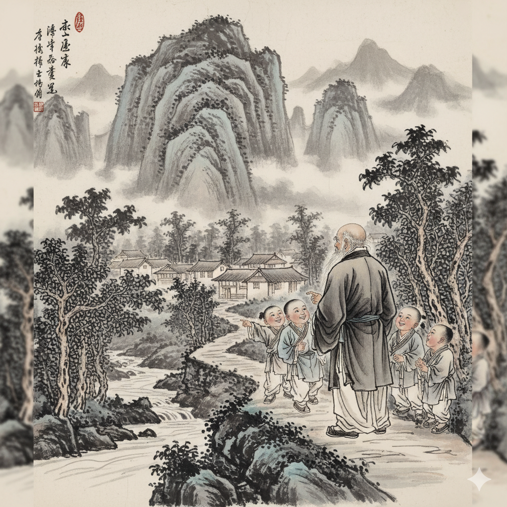
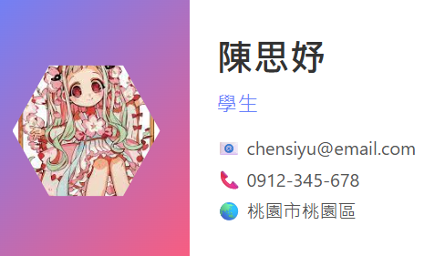
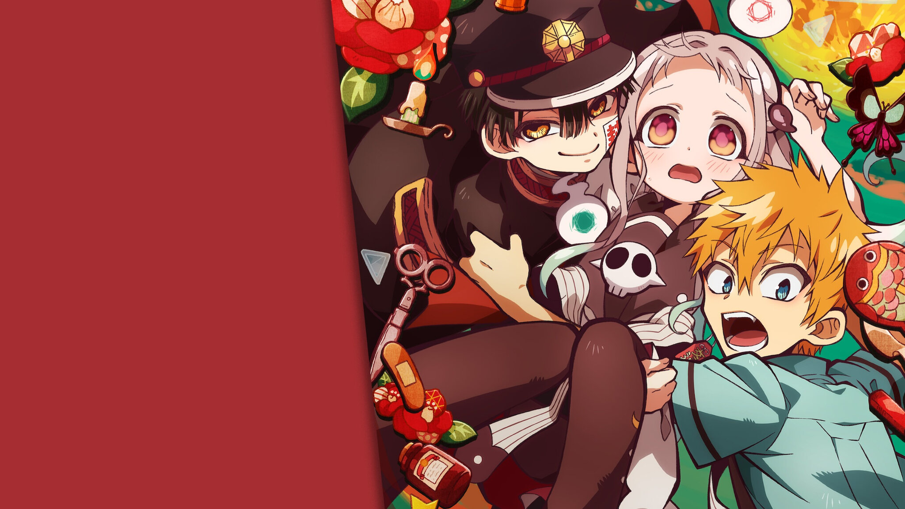
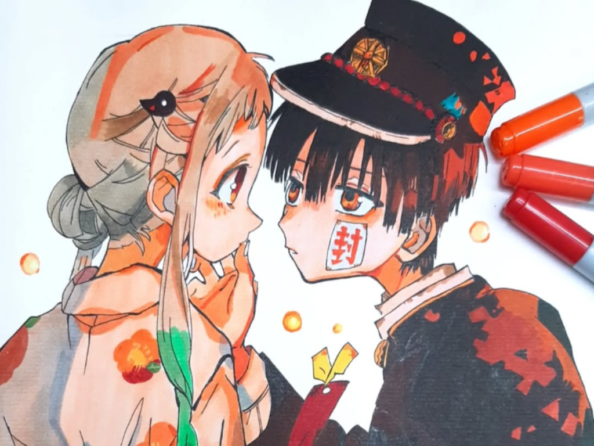
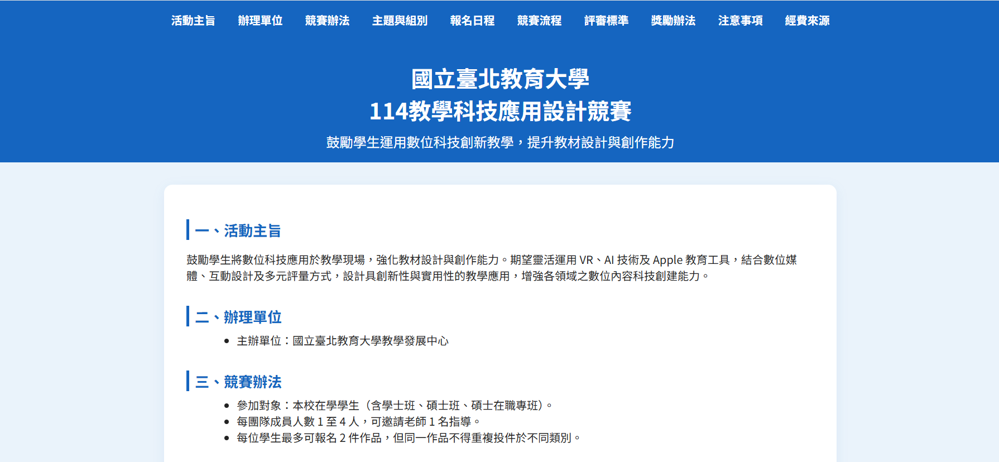

作品一
這是我的第一個作品，透過與Gemeni協作，生成唐詩意象圖。
查看作品
作品二
這是我的第二個作品，學習用table、合併儲存格、替代文字和colspan 或 rowspan製作表格。
查看作品

作品三
這是我的第三個作品，學習如何製作屬於自己的名片，並且調整圖片形狀。
查看作品

作品四
這是我的第四個作品，運用網站設計課堂所學，製作介紹動漫與顯示地圖的網頁。
查看作品
查看作品

作品五
這是我的第五個作品，學習如何在首頁加上多張圖片滾動閱覽。
查看作品

作品六
這是我的第六個作品，運用所學將一份競賽介紹檔案製作成一目了然的一頁式網站。
查看作品